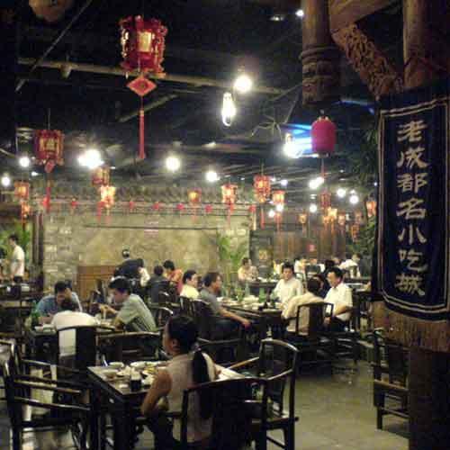

包容性超强的多样都市
这座101层的摩天大楼即使没有顶部的光圈也是上海天际线的显著标志。它曾经是中国大陆第一高楼。这座塔始建于1997年，但同年7月开始的亚洲金融危机使该项目暂停了。到了2003年，建设又恢复了，5年后上海环球金融中心正式竣工。这里绝对能够成为你一生必去地点之一！
商场的整体设计与上海陆家嘴金融区的规划互相匹配，整个外形的建筑灵感来自永恒璀灿的钻石，日夜绽放眩目的迷人光芒，与上海外滩和东方明珠的繁荣景象互相辉映。整个商场内部以高贵浪漫的香槟色及淡米白色为主要色调，装潢设计突出时尚、高贵与精致等特点 ，而典雅欧陆式歌剧院的浪线型镂空设计，增强了商场的室内空间感，营造宽敞的休闲环境。位于世纪大道的商场入口是复式商铺设计, 10米高, 55米长。楼顶配上别致的鹅蛋形水晶吊灯，彰显强烈的个性和时尚的魅力。
写字楼为上海最顶级标准，周边商务环境良好，由亚太地区领导性的服务式办公室供应商管理，以专注细节而著称，专业的服务团队为客户提供优质商务服务与技术支持，能够满足国际性企业对办公室的灵活性和高品质服务的需求。
故事相关产品
-

-
往返交通
- 
-
老茶馆
相关故事
-
-
中心大厦观光厅
位于上海浦东黄浦江畔，上海标志性建筑物。
-
-
-
外滩十八号
位于上海市外滩南京路口，原为英国银行驻中国的总部。
-
评论
2017.8.31 20:06
位于上海最为繁华的金融贸易区，这里的地理位置相当优越，楼高也有十分高，现在是上海市第3高的大楼，在整个中国大陆大楼的高度排名也是第3。这座十分高耸的大厦受到很多游客的喜爱，每天都可以迎来一万多人的来往，成为上海一处十分重要的景点。我们应该了解一下上海金茂大厦简介，再去游玩。